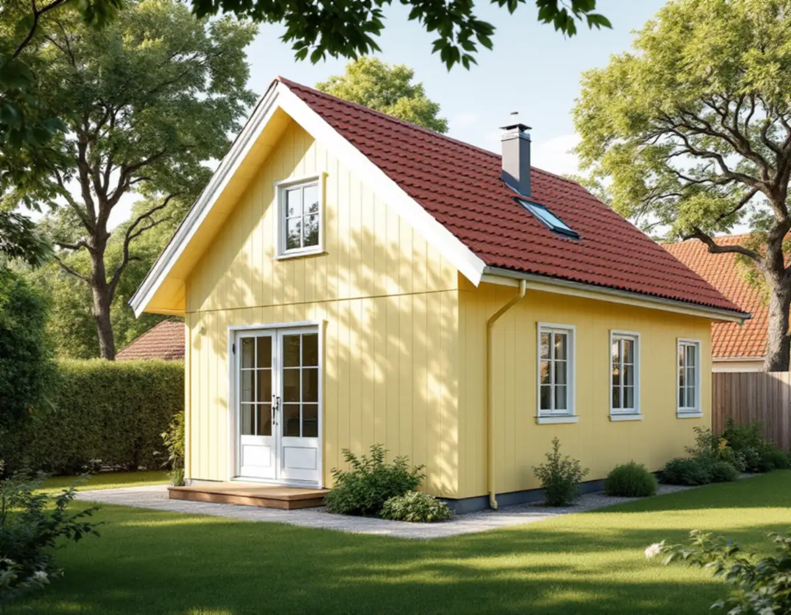
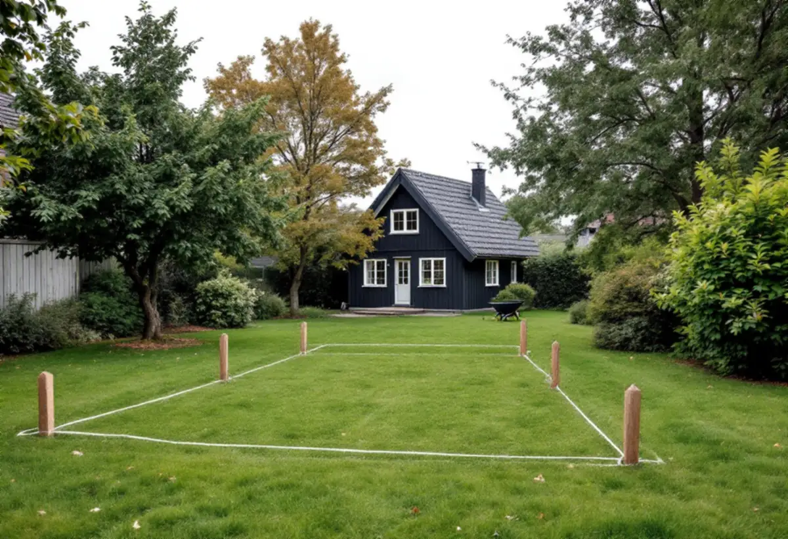

Planen
Detaljplan, prickmark och Stadsmuseets klassificering för tomten.
Villastäderna i Älvsjö planerades för stora trädgårdar, och många tomter har sedan dess delats. Det gör att förutsättningarna för ett komplementbostadshus kan skilja sig mycket mellan två grannar. Geal Entreprenad AB bygger attefallshus nyckelfärdigt och börjar med detaljplanen, klassificeringskartan och tomtens mått.

Stadens skrift Varsam utveckling av småhus- och villaområden beskriver villastäderna som fritt liggande hus i trädgårdslandskap på tomter om 1 500–3 000 kvadratmeter. I Älvsjö villastad togs stadsplanen fram av Per Olof Hallman. När nya planer gjordes för delar av villastäderna på 1930-talet blev tomterna mindre, 700–1 000 kvadratmeter, och genom successiv tomtdelning har hus kommit till på tomter kring 600 kvadratmeter.
Skriften pekar ut villastadens gröna karaktär som det som håller ihop områdena. Bland de aspekter som har stor påverkan vid förändring nämns volym, proportioner och takform, även för komplementbyggnader. Den påminner också om att dagvatten ska tas om hand inom den egna fastigheten och att gröna ytor inte bör hårdgöras. Vi placerar därför huset så att träd och gräsytor sparas så långt det går.

Stockholms stad beskriver ett komplementbostadshus som en självständig bostad som ska stå fristående och vara ett komplement till ett en- eller tvåbostadshus som redan finns. Utan bygglov får det vara högst 30,0 kvadratmeter byggnadsarea och 4,0 meter i nock, mindre än villan och rymmas i en sammanlagd area på 45,0 kvadratmeter. Attefallshus och friggebodar som redan står på tomten räknas in. Ett lovfritt komplementbostadshus får strida mot detaljplanen och kan alltså placeras på prickmark.
Ett befintligt komplementbostadshus kan byggas till utan lov så länge det efter tillbyggnaden inte blir större än 30,0 kvadratmeter eller högre än 4,0 meter. Bor du i en särskilt kulturhistoriskt värdefull byggnad eller ett sådant område gäller utökad lovplikt. Staden hänvisar till Stadsmuseets klassificeringskarta som en första indikation. Staden påminner också om att det du bygger inte får orsaka en betydande olägenhet för omgivningen och att varsamhetskrav och tekniska egenskapskrav gäller även utan lov. Detaljplanen för fastigheten hittar du i e-tjänsten Bygg- och plantjänsten.
Huset ska placeras 4,5 meter från gränsen mot granne, samfällighet eller allmän plats, och minst 30 meter från järnvägsspår om inte infrastrukturförvaltaren medger det. Vill du bygga närmare en granne behövs ett skriftligt medgivande som enligt staden ska innehålla fastighetsbeteckning, vilken typ av åtgärd det gäller, en situationsplan med åtgärden och avståndet till gränsen och underskrifter från berörda grannar.
Mot gata och park är det oftast kommunen som är huvudman, och då skickar du förfrågan skriftligt till stadsbyggnadskontoret. Staden råder dig att kunna visa medgivandet för byggnadsnämnden om ett tillsynsärende uppstår. Vi ritar situationsplanen så att den kan användas direkt i medgivandet.
Ska huset få vatten och avlopp krävs en anmälan och startbesked innan installationen börjar, och detsamma gäller ventilation och eldstad. Stockholm Vatten och Avfall vill ha en servisanmälan i god tid före byggstart, med en ritning över ledningsdragningen. Utan ritningen kan ansökan inte behandlas. Vattenledningen kopplas efter vattenmätaren i det befintliga huset och spillvattnet på den befintliga spillvattenledningen inom tomten, gärna via en rensbrunn.
Dag- och dräneringsvatten får inte kopplas till spillvattnet. Ligger det nya huset högre upp och längre från förbindelsepunkten kan vattentrycket bli sämre, skriver SVOA. Har huset kök eller pentry och toalett räknas det som en egen bostad och en bostadsenhetsavgift tillkommer. Om villornas tak och fasader i Älvsjö kan du läsa under takrenovering i Älvsjö och fasadrenovering i Älvsjö. Lagens mått finns i reglerna för attefallshus.
Detaljplan, prickmark och Stadsmuseets klassificering för tomten.
Befintliga byggnader, träd, marknivåer och avstånd till gränserna.
Situationsplan till grannen eller stadsbyggnadskontoret vid behov.
Anmälan för VA och ventilation och servisanmälan till SVOA.
Grund, stomme, tak och installationer fram till nyckelfärdigt.
Huset används när slutbeskedet har kommit.
Skatteverket räknar upp arbeten som inte ger rotavdrag på ett småhus, bland annat att bygga ett helt nytt hus, en friggebod, ett garage eller en liknande fristående byggnad, och att skriva bygglovshandlingar eller anlita en arkitekt. Ett komplementbostadshus är en ny fristående byggnad, så kostnadsförslaget räknas utan avdrag.
Husets storlek och planlösning, kök och badrum, grund i sluttning eller på berg, ledningarnas längd från villan och hur material kan bäras in på en tomt med träd och häckar. Efter ett gratis platsbesök får du ett skriftligt kostnadsförslag.
Komplementbostadshus på tomten.
Attefallshus →Takbyte, takbesiktning och plåtarbeten.
Takläggare i Älvsjö →Långbro, Herrängen och Långsjö.
Takrenovering i Älvsjö →Villorna, träbjälklaget och golvvärmen.
Badrumsrenovering i Älvsjö →Byggrätt, gamla planer och planändring.
Byggföretag i Älvsjö →Villastad, nya grannhus och puts på trä.
Fasadrenovering i Älvsjö →Småspröjs och fönsterluckor.
Fönsterrenovering i Älvsjö →Golvvärme under trägolv i äldre villor.
Golvläggare i Älvsjö →Slipa och ge golvet en ny kulör.
Golvslipning i Älvsjö →Villastad, flerlägenhetsvillor och kök i lager.
Köksrenovering i Älvsjö →Villastad, egnahem och småstugor i Älvsjö.
Målare i Älvsjö →Plåttak för solceller, kupor och verandor i Älvsjö.
Plåtslagare i Älvsjö →Staket, grind och plank i villastaden.
Snickare i Älvsjö →Vinden, kupan och byggrätten.
Takbyte i Älvsjö →Bårder och dekor i villastaden.
Tapetsering i Älvsjö →Byggrätt, trädgårdssida och volym.
Tillbyggnad i Älvsjö →